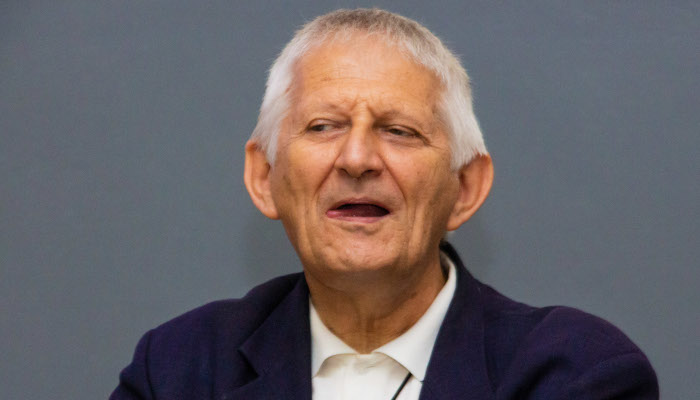
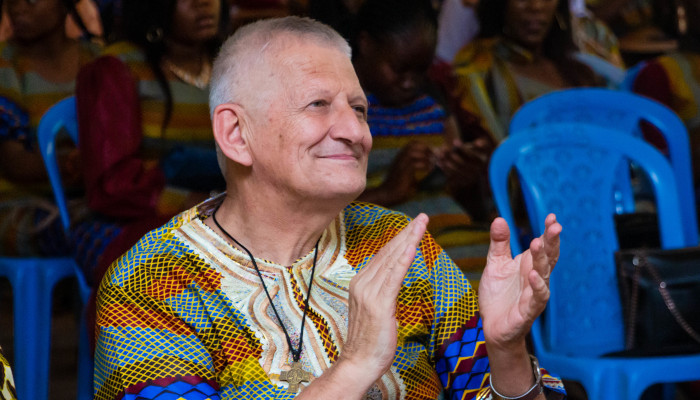

PRÉSENTATION DU DG DE ESIS
Publié le 04/04/2022 (Jabulani !D)


ESIS a démarré l’année académique 2021-2022 avec un comité de gestion remanié à 75 %, et notamment avec un nouveau Directeur Général, en la personne du Père Jean-Luc VANDE KERKHOVE. 
Pour la petite histoire, le Père Jean-Luc est né à Mouscron, en Belgique. Il a suivi ses études secondaires dans la section gréco-latine du collège St Joseph de la même ville.
Après son noviciat, il est envoyé à l’Université Catholique de Louvain pour y poursuivre un baccalauréat en philosophie. Une fois son stage pratique achevé, ses supérieurs l’envoient poursuivre des études de théologie à l’Université Pontificale Salésienne de Rome où il obtient le baccalauréat en théologie. Il poursuit ensuite ses études de théologie à l’Université flamande de Louvain (K.U.L.) jusqu’à la licence. Celle-ci achevée, il se rend à Louvain-la-Neuve pour terminer sa licence en philosophie.

Après deux ans d’enseignement au Scolasticat Jean XXIII de Kolwezi, il part pour Rome où il défend un doctorat en théologie.
A son retour, il est pendant de nombreuses années bibliothécaire et directeur général de l’Institut de Théologie St François de Sales de Lubumbashi. Il passe deux ans comme directeur de la communauté de la Polyclinique Afia et devient ensuite vicaire provincial de la province d’Afrique Centrale des Salésiens de Don Bosco.
Après une année passée à KANSEBULA comme secrétaire académique, il est nommé DG de l’ESIS pour un mandat de quatre ans.
Arsène KABUYA
| N° | Titre | Date pub. |
|---|---|---|
| 1 | PROGRAMME DE LA JOURNEE SCIENTIFIQUE | 25/08/2022 |
| 2 | CONFÉRENCE DE L’UNOPS À ESIS | 11/07/2022 |
| 3 | CONSTRUCTION PREMIER NIVEAU BLOC A | 11/07/2022 |
| 4 | FÊTE DE MARIE AUXILIATRICE | 03/06/2022 |
| 5 | DIPLOMES | 27/05/2022 |